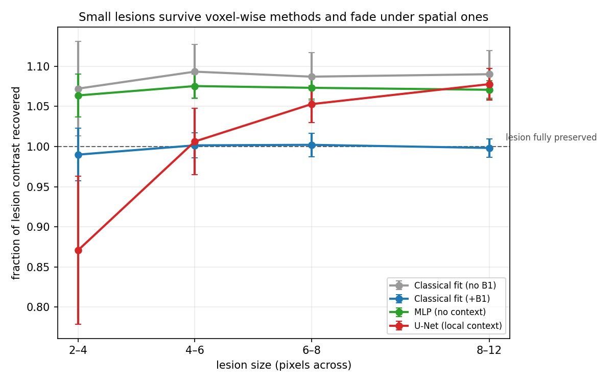

L'IRM quantitative mesure une grandeur physique réelle par voxel (ici T1) au lieu d'une image dont la luminosité dépend de la machine. Le calcul classique se fait voxel par voxel ; les réseaux de neurones exploitent le contexte spatial et améliorent l'erreur globale. Mais une lésion de SEP peut faire 3 pixels, et elle représente 2 % des voxels : l'erreur globale est dominée par les 98 % restants.

| Méthode | global | lésions |
|---|---|---|
| Ajustement +B1 | 70,7 | 30,8 |
| MLP | 53,0 | 38,1 |
| Swin | 56,7 | 39,3 |
| U-Net | 56,4 | 50,2 |
Le déséquilibre des classes est bien étudié en classification. Ici le même phénomène apparaît en régression : la région cliniquement décisive est minoritaire (2 %), la métrique standard est dominée par la majorité, et une défaillance complète sur la minorité reste invisible. Une approche de rééchantillonnage ou de pondération ciblée s'appliquerait-elle à ce cas ? C'est la question que j'aimerais explorer avec vous.
| Méthode | Voit | Isole |
|---|---|---|
| Ajustement, sans B1 | 1 px | référence naïve |
| Ajustement, avec B1 | 1 px | référence à battre |
| MLP | 1 px | apprentissage sans contexte |
| U-Net | 92 px | contexte local, poids fixes |
| Swin Transformer | 224 px | contexte large, attention |
Le MLP est le témoin. Il apprend mais ne peut rien lisser : il ne voit qu'un voxel. Sans lui, un échec du U-Net serait inexploitable — impossible de distinguer l'apprentissage du lissage. Données simulées : la vérité terrain est connue voxel par voxel, ce qu'aucune acquisition réelle ne permet. Anatomie réelle (phantom BrainWeb, MNI Montréal), lésions uniquement dans le jeu de test.
Le phénomène n'est pas nouveau : Gyori et al., MRM 2022 montrent que les estimateurs appris sont biaisés vers leur distribution d'entraînement, et la littérature sur la reconstruction montre depuis 2020 que les réseaux effacent de petites pathologies. Ce que je n'ai pas trouvé : un témoin voxel-par-voxel appris séparant contexte et apprentissage, et la rétention résolue par taille de lésion en cartographie paramétrique plutôt qu'en reconstruction.